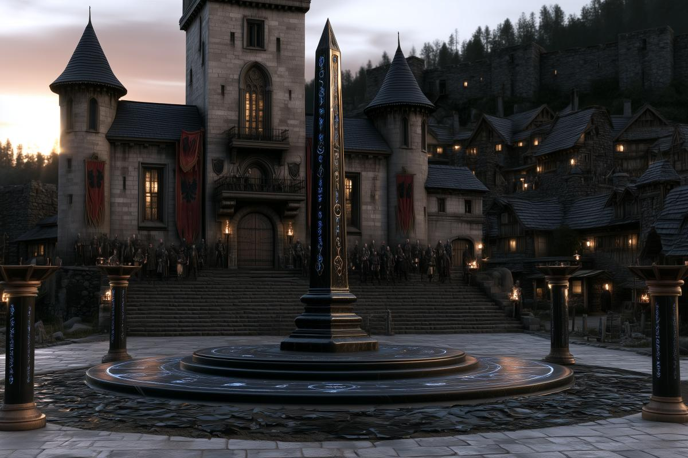
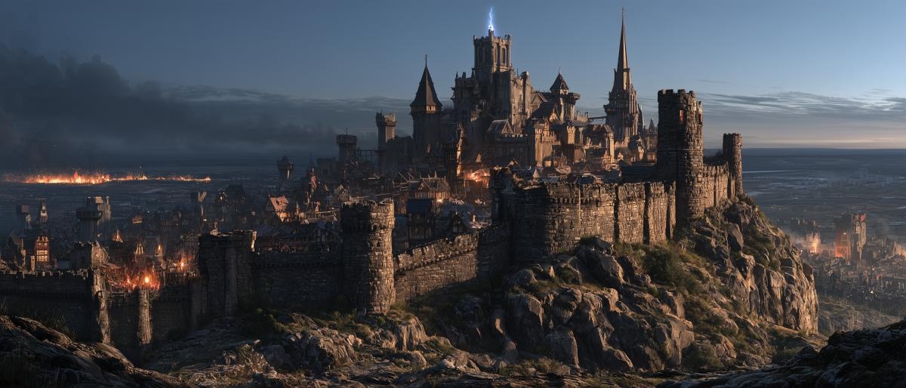
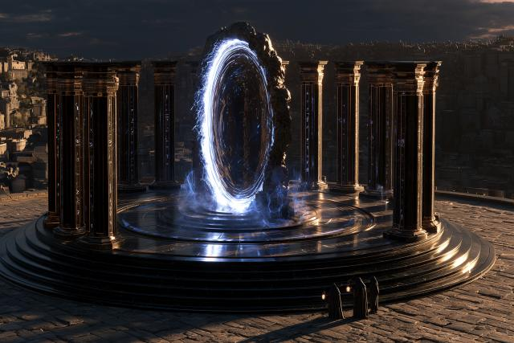
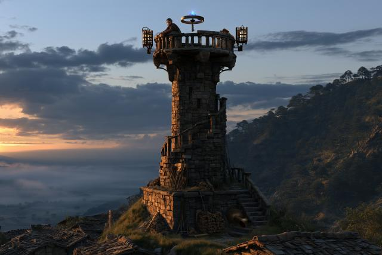
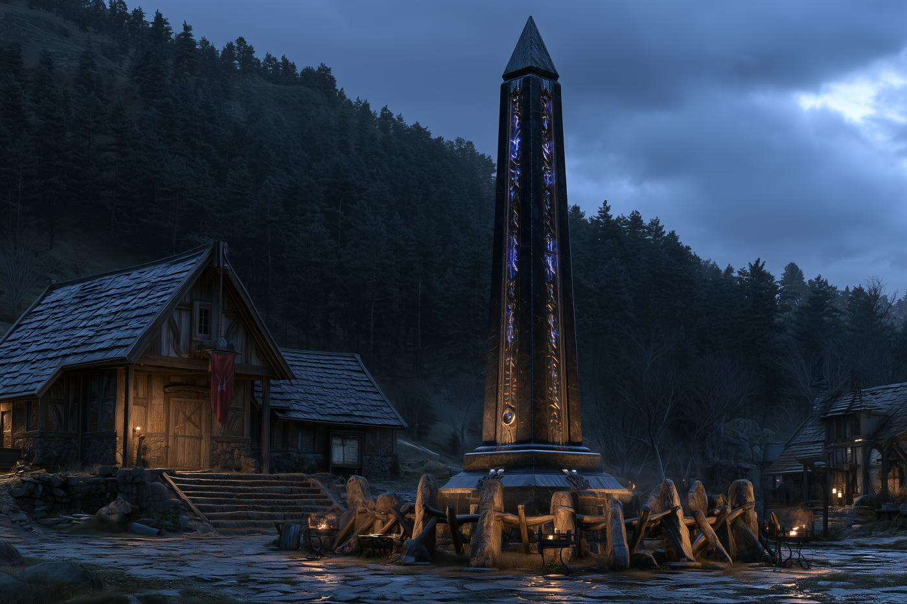
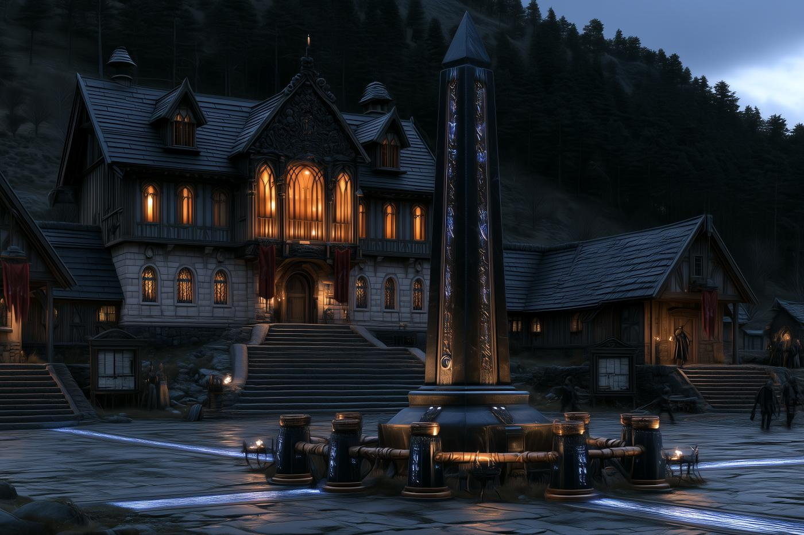
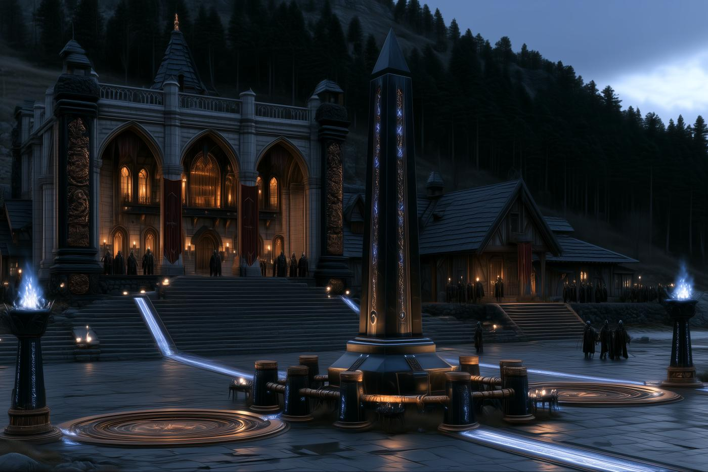
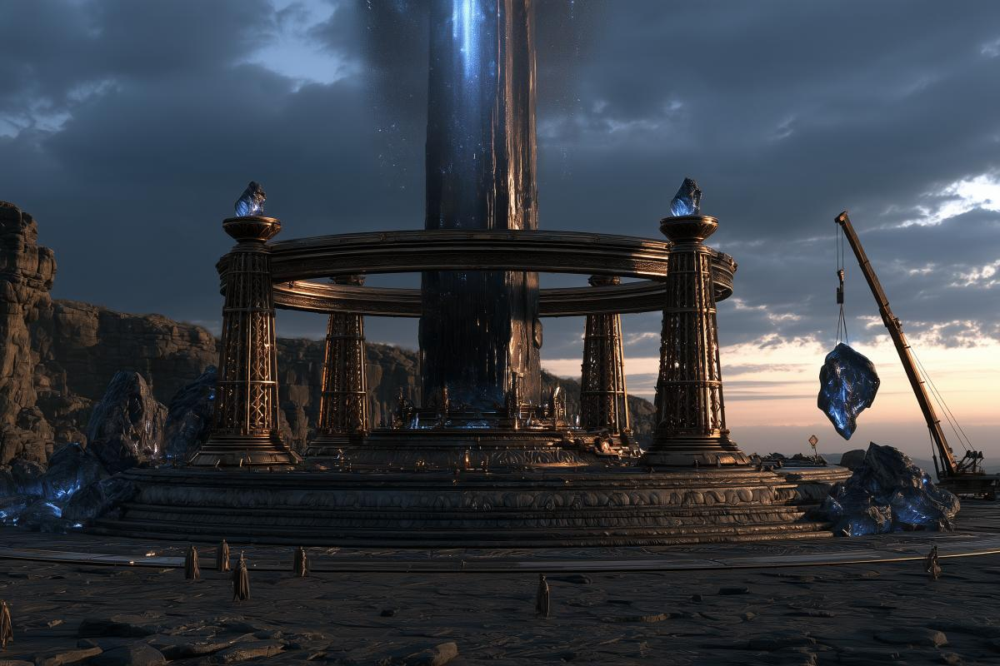

Un héros gouverne votre cité.
Un archétype, des talents, un équipement forgé de vos mains. Un échec coûte du temps, jamais le héros.

Trois mille ans après la Rupture, les Neuf Sphères se relèvent à peine. Bâtissez votre cité, envoyez vos héros contre ce qui rôde au-delà des murs, et faites grandir un empire qu’aucun autre joueur ne viendra raser dans votre sommeil.
Stratégie et gestion d’empire au long cours, par navigateur, pensée d’abord pour le PvE et la coopération.

Un archétype, des talents, un équipement forgé de vos mains. Un échec coûte du temps, jamais le héros.

Un nouveau serveur s’ouvre à chaque chapitre, sur un calendrier fixe. Vous pourrez toujours rejoindre un ami sur un serveur plus ancien.

Un joueur pacifique ou sans alliance ne se fait pas écraser par plus fort que lui.
Votre cité commence modeste et change de visage à mesure que son Hôtel de ville s’élève : l’habitat grandit, la ville se défend, puis la magie et le pouvoir s’installent.



L’obélisque, hérité de Kaelhelm, ne bouge pas. Tout le reste, vous le bâtissez.

Le monde repose sur les Straumar, des lignes de mana qui parcourent la réalité comme un réseau vivant.
Il y a des millénaires, les érudits de Kaelhelm ont tenté d’aligner les Straumar de plusieurs Sphères. La cité a disparu, le continent a éclaté en Éclats, et un gouffre est resté à sa place.
Aujourd’hui, les hordes se réveillent. Vous tenez une cité humaine, à l’ombre d’un obélisque que personne ne comprend encore.
Laissez votre adresse : vous recevrez les grandes nouvelles du projet, en français, et rien d’autre.
Chacun est un moment où nous aurons quelque chose de vrai à montrer. Une date ne sera donnée que le jour où nous serons sûrs de la tenir.